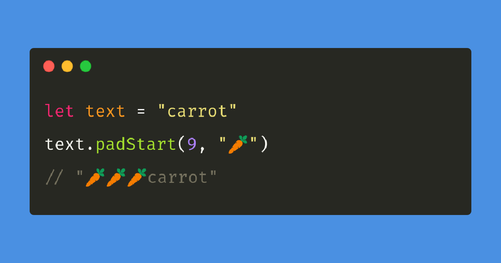

Quick Tip #1: Padding a string in Javascript

The padStart() function is used to add "padding" to a string with another repeating string and to fix its width.
padStart() takes two arguments. The first argument sets the length of the string and the second argument takes another string to pad the original string with.
Example
Padding a string containing binary numbers with zeroes to make it eight digits long.
const bin1 = "110
const bin2 = "1101"
const bin3 = "01001"
const paddedBin1 = bin1.padStart(8, "0") // 00000110
const paddedBin2 = bin2.padStart(8, "0") // 00001101
const paddedBin3 = bin3.padStart(8, "0") // 00001001
Here, we are using padStart() to fix the length of the strings at 8 characters and to fill any empty spaces with "0"
See the MDN Docs on the padStart() function for more info.
Date posted: May 27, 2021
Last updated: Dec 21, 2021
Last updated: Dec 21, 2021